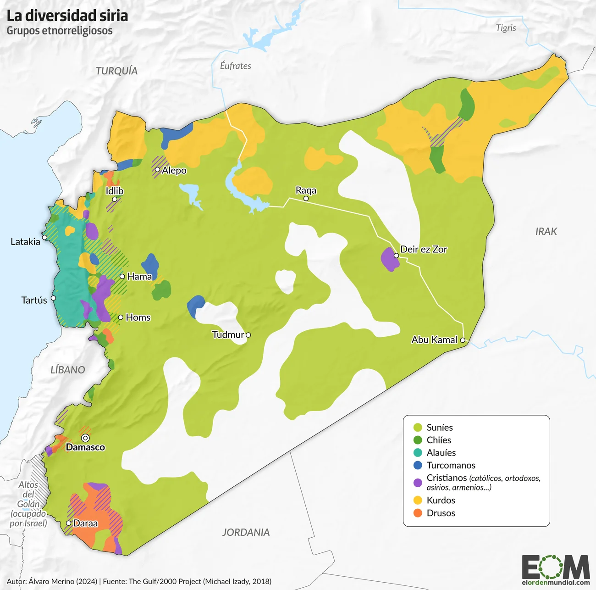
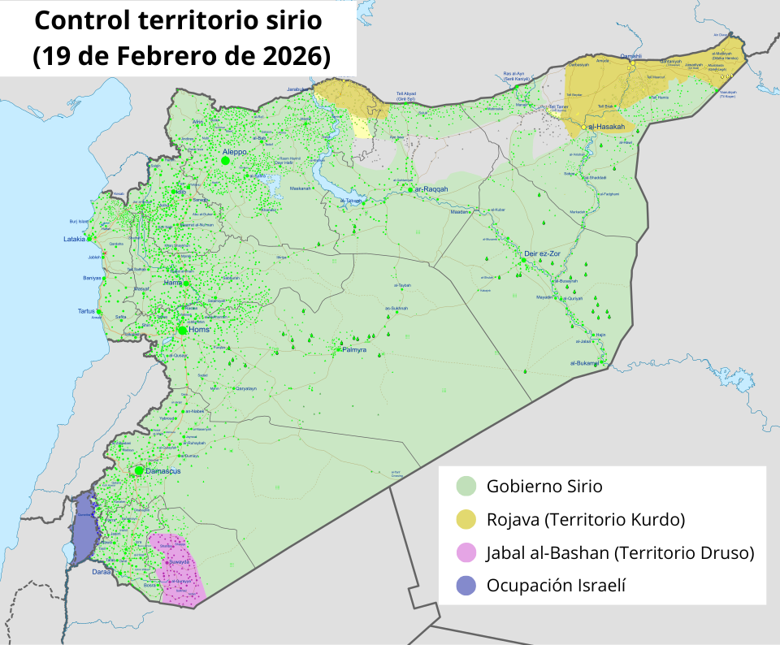
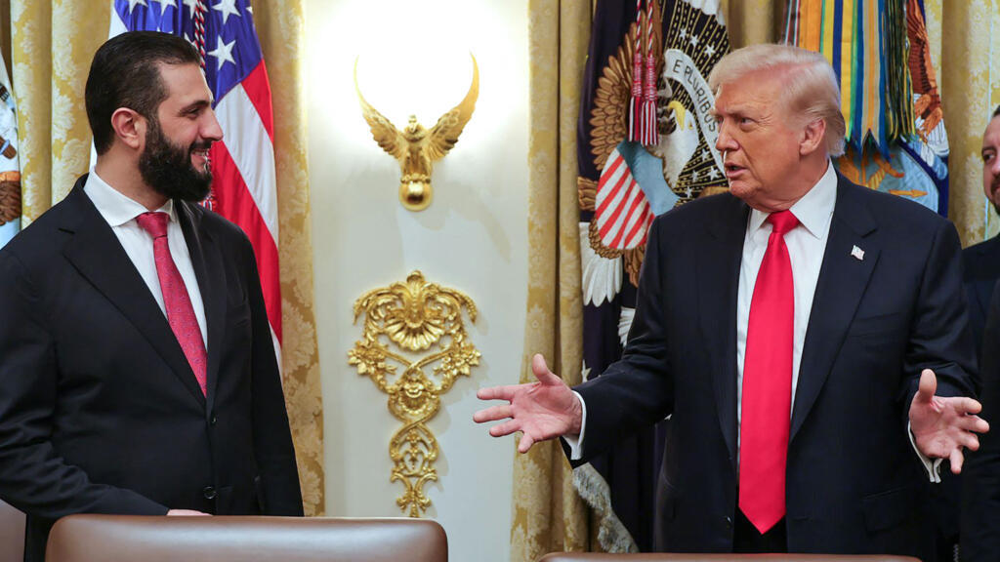
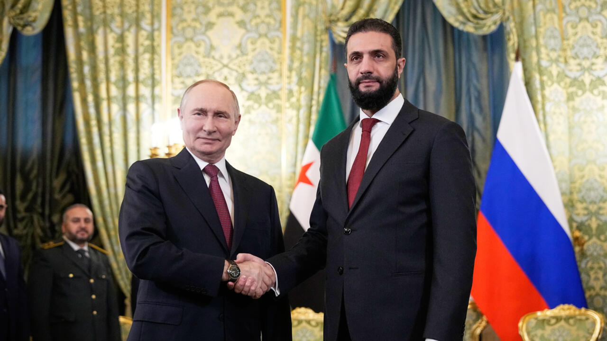
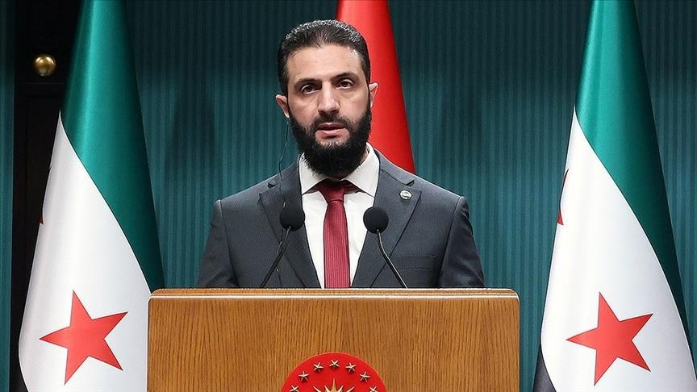

El 8 de diciembre de 2024, una guerra que parecía congelada y llevaba más de una década acabó de la noche a la mañana. Una ofensiva relámpago de los rebeldes alcanzó Damasco por sorpresa y obligó a su presidente Bashar al-Assad a exiliarse, acabando con un régimen que había durado desde 1963. Sin embargo, el conflicto aún no ha finalizado. Enfrentamientos con minorías, resistencias militares, tensiones con vecinos, insurgencia islamista… todo esto es con lo que debe lidiar la nueva Siria liderada por Ahmed al-Charaa, quien además carga con un pasado yihadista. Aunque ya no salga en portada, el conflicto que colapsó Europa en 2014 continúa.
Las tensiones étnicas

Fuente: Alvaro Merino (2024)
Siria es un país étnicamente diverso. La mayor parte de la población es suní, pero los Assad, quienes han estado en el gobierno medio siglo, son alauitas. Esto ha provocado desconfianza y resentimiento entre las diferentes etnias del país. Tras la caída de al-Assad, enfrentamientos con el nuevo gobierno provocaron varias masacres contra los alauitas y drusos, lo que aumentó la desconfianza de estos grupos. Como consecuencia, los kurdos, quienes controlan un estado autónomo de facto en el norte del país a través de las Fuerzas Democráticas Sirias (FDS), rechazaron la integración en el gobierno sirio que ellos mismos habían propuesto. Solamente en enero de 2026 ambos bandos firmaron un tratado de paz tras una gran operación militar del ejército de Damasco.
Los vecinos

Fuente: Ermanarich
Además de los conflictos dentro de sus propias fronteras, Siria también está bajo la constante amenaza de Israel y Turquía.
El 8 de diciembre de 2024, el mismo día que las tropas rebeldes entraban en Damasco, Israel atravesó la frontera que comparte con Siria, ocupó el área de separación entre ambos países bajo control de Naciones Unidas y bombardeó localizaciones militares. Desde el fin de la guerra de Yom Kipur (1973), Israel mantiene el control de los Altos del Golán argumentando que es necesario para su propia seguridad. Esta nueva anexión territorial fue justificada por Netanyahu quien declaró el acuerdo anterior como nulo tras la caída de al-Assad y aseguró que pretendía defender a la población drusa y apoyar al estado autónomo Jabal al-Bashan. Bajo estos principios militares, Israel ha llegado a bombardear Damasco.
Por otro lado, Turquía invadió parte del norte de Siria durante la Guerra Civil. Preocupada por la creación del estado kurdo y la posibilidad de que eso se repitiese en territorio turco, la lucha contra el estado de Rojava ha sido la principal prioridad de Ankara. Solamente tras la firma de paz entre los kurdos y el gobierno sirio, con el visto bueno turco, y la integración de los primeros en el ejército regular sirio, Erodogán decidió devolver el control de las zonas a Damasco.
Las grandes potencias


Fuente: Nicolas CHAMONTIN
Fuente: Alexander Zemlianichenko
Cuando las fuerzas rebeldes entraron en Damasco, la expectativa era que esto marcaría un giro hacia EE.UU. y Europa en cuanto a política internacional. Al-Assad había sido apoyado militarmente por Rusia y el régimen de ideología socialista árabe era muy cercano desde la época de la Unión Soviética. Sin embargo, al-Charaa parece no querer cortar relaciones con ninguno de los dos. En noviembre de 2025, el presidente sirio se reunió con Donald Trump en la Casa Blanca. El objetivo de esta visita era rehabilitar su imagen de ex-yijadista, conseguir la eliminación de las sanciones contra Siria y limitar la influencia de la República Islámica de Irán en Siria. Sin embargo, el hecho de que algunas sanciones se mantuvieran y la falta de contundencia de EE.UU. y Europa con la anexión de territorio por Israel, incluso exigiendo a Siria que se uniese a los Acuerdos de Abraham, provocaron que al-Charaa también visitase a Vladimir Putin en Moscú en enero de 2026. A pesar de que Rusia se negase a extraditar a al-Assad, quien está exiliado en el país, ambos mandatarios llegaron a un pacto por el cual se mantenían los acuerdos económicos y militares del anterior gobierno y Putin reconocía la integridad territorial de Siria, tanto en el norte como en el sur.
Los retos

Fuente: AA
Aun haber acabado la Guerra Civil Siria, la paz no ha vuelto a la región y el gobierno de al-Charaa y la población siria se han encontrado con muchos problemas. Aunque ya no controla territorio, el Estado Islámico sigue activo en la región y los conflictos internos están permitiendo a presuntos miembros escapar. Parece que se ha logrado pactar la paz con las Fuerzas Democráticas Sirias, pero los enfrentamientos en el sur continúan, incluyendo con el estado de Israel. Una vez finalizados los conflictos, el país también tendrá que dar respuesta a las peticiones de justicia contra los crímenes de guerra realizados por todos los actores.
Las condiciones de vida también han sufrido mucho por la Guerra Civil. Con las sanciones aún en sus hombros, la economía siria no se ha recuperado y la estructura necesaria aún no ha sido reconstruida, en gran parte por los conflictos internos que aún existen por el control del territorio.
Y una vez logrado todo esto (la paz, el fin de las tensiones étnicas, el control de todo su territorio, una economía estable), el gobierno sirio ha prometido realizar una transición democrática que exigiría la formación de partidos políticos en un régimen que realice elecciones justas y competitivas. En esta transición también se tendrá que definir la posición del nuevo régimen ante temas sociales como los derechos de las mujeres u homosexuales, un tema especialmente delicado por el pasado yihadista de al-Charaa y la división entre la propia población.
El gobierno ha llevado a cabo algunos pasos. La economía ha sido liberalizada con el objetivo de atraer inversiones extranjeras, aunque la inestabilidad ha impedido que de momento esa acción vea resultados. Sobre la cuestión étnica, se ha apostado por un sistema centralista, negando la autonomía pero a cambio reconociendo algunos derechos a las poblaciones minoritarias, sobre todo a la kurda que ha visto oficializada su lengua propia. Finalmente, en 2025 se realizaron elecciones parlamentarias con un sistema de sufragio indirecto. Todo esto apunta a un cambio profundo en el régimen. Que este cambio sea hacia un estado democrático, una régimen islamista o un nuevo conflicto civil está por verse.